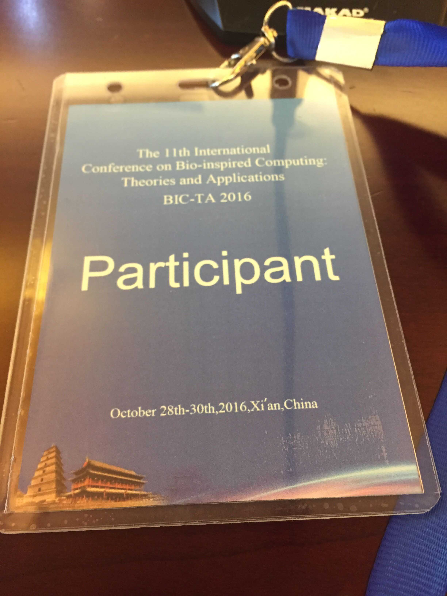
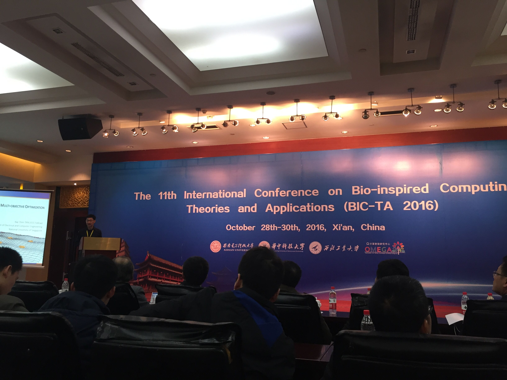

简介
大学期间主要跟随龚文引导师进行差分演化算法的研究,期间阅读了多篇文献，包括 jDE，jADE，SHADE，SaDE 等等，对科研
有了初步的认识
成果
发表了一篇会议论文
L. Wang, W. Gong: Ensemble of different parameter adaptation techniques
in differential evolution. BIC-TA (2) 2016: 73-79
自己主要负责算法的实现，数据的处理分析，老师负责论文的撰写
会议
自己和老师一起在去年 10 月底参加了 BIC-TA 2016 会议，并且在会议室和其他人一同进行了交流
 